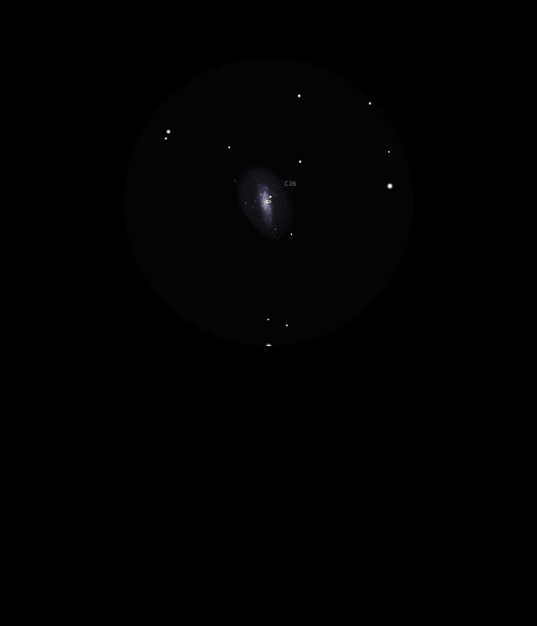

NGC 4559

Spiral Galaxy in Coma Berenices
NGC 4559
Mag 10.4
Caldwell 36
19/04/15
Ragged and diffuse in a very sparse FOV in 12mm, located around two stars of approx Mag 11.5ish
However, a feel of larger size than visible